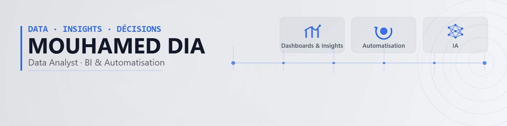

J'aide les équipes à piloter leur activité grâce à des dashboards clairs, des extractions fiables et des automatisations Python / Power BI / IA qui font gagner du temps. J'ai eu la chance de travailler avec les équipes RH, Formation, et Finance.
Data Analyst orienté BI et automatisation, avec plus de 2 ans d'expérience en reporting, développement d'outils internes et exploitation de données métier. Je conçois des dashboards Power BI, des pipelines ETL en Python, et des automatisations qui simplifient le quotidien des équipes, du cadrage des indicateurs jusqu'à la restitution devant un comité de direction.
Actuellement chez 123 Pare-brise (Lille), je combine reporting BI, automatisation de workflows internes et projets d'intelligence artificielle (computer vision, LLM locaux). Auparavant, j'ai réalisé un stage de fin d'études au siège mondial de Carrefour, et une mission de data science pour l'Institut de l'Élevage dans le cadre d'un projet européen.
Acquis : Analyse de données, statistiques, développement Python, R, web analyst, référencement naturel SEO
Certifications obtenues ou en cours de préparation.
Chaque catégorie regroupe les missions correspondantes
Merci de cliquer sur une compétence ci-dessus pour voir les projets associés.
Chaque fiche présente l'objectif, les outils, le workflow, l'interface et les résultats, avec mention explicite du niveau de confidentialité.
Le plus simple est de passer par LinkedIn ou par e-mail.